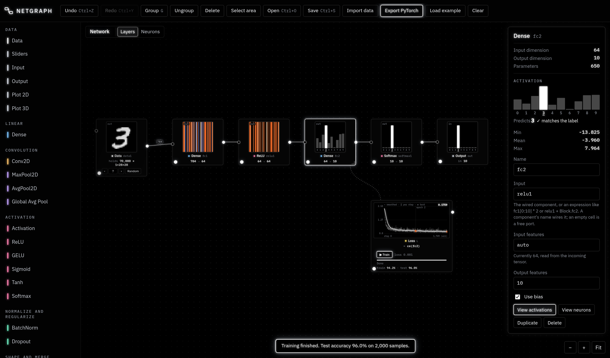
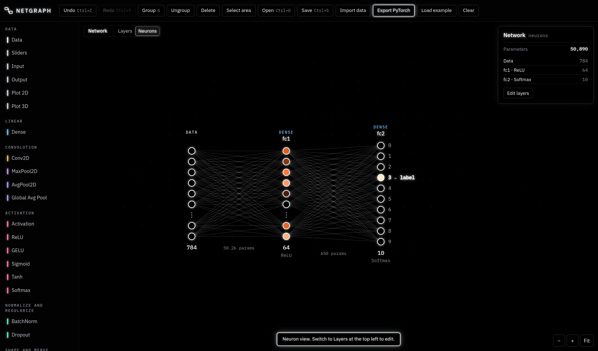
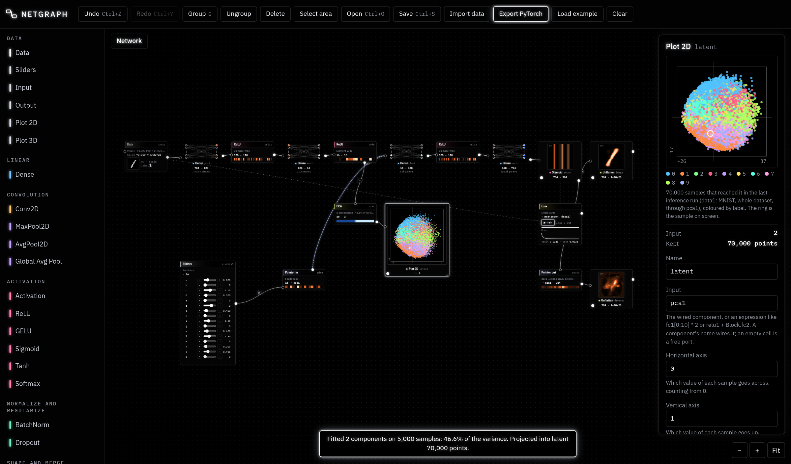

Compose neural networks.
Watch them think.
Netgraph is a neural-network sandbox that runs entirely in the browser. Wire layers together like a node editor, train them on MNIST, look at every activation and every neuron, and export the result as PyTorch code with its weights.

Build by wiring
Layers, blocks, merges and reshapes, with shapes checked as you connect.
See every activation
Any component can show what flows out of it. Dense layers open into their neurons.
Train in the browser
Losses are expressions over components. Adam or SGD, batched, off the main thread.
Analyse
Collect activations, run PCA, plot them in 2D or 3D, reuse trained parts with pointers.
01Getting started
- Open the app. On this site MNIST (70,000 handwritten digits) loads by itself; the first time takes a few seconds.
- Press Load example in the top bar for a small convolutional classifier, or start from the empty canvas: click Data in the palette on the left, then Dense, ReLU and another Dense. Each one you click is added after the selected component and wired to it.
- Select the Data component and tick Flatten so the 28×28 image becomes 784 features for the Dense layers. Set the last Dense layer's Output features to 10, one score per digit.
- Add a Loss (palette, Training). With the last layer selected it starts as
ce(fc2): cross-entropy of those scores against the true labels. - Press ▶ Train on the Loss. The curve fills in as it trains; after each epoch the test accuracy appears.
- Select a layer and press V to see its activations, or double-click a Dense layer to see its neurons. Step through samples with ← → on the Data component.
Everything runs locally in your browser: nothing is uploaded. The network, your blocks and trained weights are kept in the browser's storage; use Save to keep a project file.
02The canvas
The window has three parts: the palette on the left, the canvas in the middle and the info window on the right, which shows the selected component's shapes, settings and activations.
- Add a component by clicking it in the palette (it is placed and wired after the selected one) or by dragging it onto the canvas.
- Wire by dragging from an output port (right) to an input port (left). Shapes are checked: a connection that doesn't fit is refused with the reason. Ports slide around their component to face what they connect to.
- Bend a wire by dragging it; double-click it to straighten. Select a wire and press Delete to remove it.
- Select by clicking; Ctrl/⌘-click adds to the selection; Shift- or Ctrl-drag on empty canvas draws a selection box (or use Select area).
- Resize a component from its bottom-right corner; double-click the corner to reset.
- Every input is a cell. In the info window each input shows the name of what is wired to it. Type another component's name to rewire, or type an expression (like
fc1[0:10] * 2) to feed the input with computed values instead of a wire. - Each component shows its shapes, like
784 → 128, and explains problems in place (in red), such as a shape mismatch or a missing input.
03Looking inside
View mode
Press V (or the dot at a component's bottom-left, or View activations) to turn a component into a view of what it outputs for the sample on screen. Vectors are drawn as horizontal strips, feature maps as tiles, ten-way outputs as bars with the true label marked, and images in grayscale. Colours use a diverging map: blue for negative, black near zero, orange to white for positive.
Neurons
Double-click a Dense layer (or zoom into it past the limit) to see it as neurons and weights. The Layers / Neurons switch at the top shows a whole MLP this way. Hover a neuron to highlight its connections; its value for the current sample is in its colour.

Blocks
Double-click a block (or zoom into it) to open it; the trail at the top leads back out. Esc goes up one level.
04Components
| Component | What it does | Settings |
|---|---|---|
| Data | ||
| Data | Supplies samples of a dataset, with their labels, and holds a train/test split. With something wired into its input it collects: during an inference run it keeps everything that reaches it (see Data). Its box shows what it holds, like 70,000 × 1×28×28. | Dataset, Flatten, Test split (%), Shuffle seed; Inference: Samples from, How many |
| Sliders | Outputs a vector of hand-set values, the same for every sample. Training never changes them. | Each slider's name, min, step, max |
| Input / Output | A fixed-shape input with no data (for building and export), and the marker for what the network returns. | Input shape, like 1,28,28 |
| Plot 2D | Scatter plot of what reaches it: the sample on screen as a ring, a matrix's rows as points, and every sample an inference run sends through it, coloured by label. | Horizontal axis, Vertical axis (value indices) |
| Plot 3D | The same in 3D. In view mode and in the info window, drag to turn the camera, scroll to zoom, Shift-drag to move, double-click to reset. | Three axes |
| Layers | ||
| Dense | Fully connected layer on the last dimension. With nothing wired in, it takes its input directly (set Input features). | Input features (auto), Output features, Use bias |
| Conv2D | 2D convolution over C×H×W. | Input channels (auto), Output channels (a number or same), Kernel, Stride, Padding |
| MaxPool2D / AvgPool2D | Pooling windows over each channel. | Kernel, Stride (auto = kernel) |
| Global Avg Pool | Averages each channel's map to one value. | |
| Activation | Any function of x typed as a formula, like max(x, a*x); other names become sliders. ReLU, GELU, Sigmoid, Tanh and Softmax are the same component with their formula filled in, and run (and export) as the built-in versions. | Function of x |
| BatchNorm | Batch normalization (1D or 2D), with running statistics like PyTorch: batch statistics while training, running ones otherwise. | |
| Dropout | Drops values while training only. | Drop probability |
| Shape and merge | ||
| Flatten / Unflatten | To a vector, and back to any shape with the same number of values. | Unflatten: Output shape (auto, or like 32,7,7; one -1 is worked out) |
| Add / Concat | Two inputs (a, b): element-wise sum, or joined along the first dimension. | |
| Pointer pair | Runs a stretch of the network again on another input, with the same weights (see Pointer pairs). | Pointer in: Feeds · Pointer out: Pointer in |
| PCA | Principal component analysis of what reaches it. Fit learns the components; afterwards it projects each sample onto them (see PCA). | Components, Fit on (samples) |
| Training and blocks | ||
| Loss | An expression over components; Train minimizes it. Shows the loss curve. | Expression, Optimizer, Learning rate, Batch size, Epochs |
| Block | A group of components with one input and one output, opened by double-click. Built-ins: MLP, Conv block, Residual block; save your own to My blocks. | Block variables (in its Block input) |
Components go anywhere, inside blocks too, including Data and Loss.
05Expressions
Losses, input cells, activation functions and pointer settings use one small expression language over components. A component's name stands for its output for the current sample (or batch).
| Write | Means |
|---|---|
fc1 | The output of the component named fc1. Names are looked up in the expression's own graph first, then in each block around it. |
MLP.fc2, "MLP 2".fc1 | A component inside a block (quote names with spaces). |
fc1[3], fc1[0:10], conv1[2, :, 5] | One value, a slice, or several dimensions at once (counting from 0). |
fc1[3].pre_weights | The weights into neuron 3 (a vector, one per input). Without an index, fc1.pre_weights is the whole neurons × inputs matrix. |
fc1[3].post_weights | The weights from neuron 3 into the next Dense layer. |
+ − * / ^ | Element-wise arithmetic; numbers and one-value results broadcast. |
abs log exp sqrt tanh sigmoid relu softmax | Element-wise functions (softmax over the values). |
sum mean max min | Reductions; max(a, b) and min(a, b) with two inputs are element-wise. |
ce(scores), nll(probs) | Cross-entropy against the data's true labels, from raw scores or from probabilities. |
mse(a, b) | Mean squared error. |
Type a name or a dot for suggestions (Ctrl+Space opens them). When a component is renamed, grouped or ungrouped, every expression naming it is updated. A loss with many values is averaged.
ce(fc3) # classification
mse(recon, data1) # autoencoder reconstruction
ce(fc3) + 0.001*sum(fc1.pre_weights^2) # with weight decay on fc1
mean(abs(relu2)) * 0.01 + mse(dec, x) # sparse code06Variables and sliders
- In expressions, a plain name that isn't a component becomes a variable with a slider (on the component and in the info window), like
kinfc1[k]oralphainmax(x, alpha*x). Its min, step and max are editable; the ‹ › buttons step it. A whole input cell that is just an unknown name is treated as a typo instead, with a suggestion. - In settings, a name in a number field (like
nin Output features) also becomes a slider. - Block variables are declared in a block's Block input as
name = valuerows. A number becomes a slider on the block; an expression can use the rows above it. Layers inside the block can use these names. - The Sliders component turns sliders into a vector output, for feeding values into a network by hand.
07Blocks
Select several components and press G to group them into a block; Shift+G ungroups. A block has one input and one output; inside, they are the Block input and Block output terminals. A block that holds its own Data component needs no input. Save to my blocks keeps a block in the palette for reuse.
08Training
- A Loss has no input wires: its expression names what it uses. The samples come from the Data component upstream of those names, and only its train split is used for training.
- Train runs in a background worker, so the page stays responsive. The curve shows the smoothed training loss and, after each epoch, the loss on (up to 2,000) test samples, with accuracy for classification losses. Select the Loss and drag its chart to pan, scroll to zoom, double-click to see it all.
- Evaluate on test set scores the whole test split. Reset weights starts over from fresh random weights.
- Adam (PyTorch defaults) or SGD with momentum 0.9; weights start like PyTorch's defaults. A test suite checks outputs, gradients, BatchNorm statistics and optimizer steps against real PyTorch.
- Several losses can coexist; one loss may use another's value.
09Data, inference and collecting
Import data reads IDX files (the MNIST format, gzipped or not): pick an images file together with its labels file, or drop them on the canvas. The dataset is kept in the browser. Each Data component shuffles it with its seed and holds out a test share.
Collecting activations
A Data component with something wired into its input collects. Wire, for example, the middle layer of an autoencoder into a new Data component. Then select the Data component the flow starts from and, under Inference, choose Samples from (test split, train split or whole dataset) and How many, and press ▶ Run inference. The collecting component keeps every sample that reached it, with its true label, as a dataset of its own: you can step through it, view it, plot it, or train another network on it. Plots wired downstream are filled the same way.
10Pointer pairs
A pointer pair runs a stretch of the network again, on a different input, with the same weights. Typical use: feed a trained decoder from sliders, without cutting it off from its encoder.
- Add a Pointer pair from the palette: a Pointer in and a Pointer out appear.
- Wire the new input (for example a Sliders component) into the Pointer in.
- Drag the Pointer in's output onto the input of the layer where the stretch starts. That layer keeps its own wire; the link shows as a dashed blue wire beside it.
- Wire the layer where the stretch ends into the Pointer out. Its output is the stretch's result on the new input.
Gradients flow through both runs into the shared weights. The stretch must not take inputs from outside it (other than its first layer's).
11PCA and plots
PCA takes whatever reaches it (it flattens each sample). Fit runs the first Fit on train samples of the Data component upstream through the network, computes their mean and covariance, and keeps the top Components principal directions; the info window shows how much variance each explains. Then it runs the whole dataset through into any Data components and plots after it. Once fitted it is a fixed projection, so the sample on screen, inference runs and training flow through it too; in the PyTorch export it is a frozen nn.Linear.

12Recipes
See an autoencoder's latent space
Build Data (flattened) → Dense 128 → ReLU → Dense 16 → ReLU → Dense 128 → ReLU → Dense 784 → Sigmoid, add a Loss mse(sigmoid1, data1) and train. Wire the 16-unit ReLU into a PCA (2 or 3 components) and the PCA into a Plot 2D or 3D, then press Fit and project on the PCA.
Linear probe
Collect a hidden layer into a Data component, wire it into a single Dense layer with 10 outputs and a Loss ce(…), and train. The test accuracy says how linearly the labels can be read at that depth.
Read a neuron's weights as an image
Set an Unflatten's input cell to fc1[3].pre_weights, its shape to 1,28,28, and turn on view mode: the 784 weights into neuron 3 as a picture.
Ablate or steer
Feed a layer from an input cell such as relu1 * (1 - sliders1) to switch neurons off, or relu2 + a*sliders1 to push along a direction, and watch the prediction change.
13Saving and exporting
- Save (Ctrl+S) downloads a JSON project file with the network, your blocks and the trained weights. Open (Ctrl+O) or dropping the file on the canvas loads it. Datasets are referred to, not included.
- Export PyTorch writes a
torch.nn.Modulewith the same layers, aforward()that also keeps every intermediate value, and the loss expressions as torch code. Download the code and a.safetensorsfile of the weights, then:
from safetensors.torch import load_file
from netgraph_model import Net
model = Net()
model.load_state_dict(load_file("netgraph_weights.safetensors"))14Keyboard and mouse
| Keys | Action |
|---|---|
| Ctrl+Z / Ctrl+Y | Undo / redo |
| Ctrl+C X V | Copy, cut, paste (trained weights come along) |
| Ctrl+D | Duplicate |
| Ctrl+A | Select everything in this graph |
| G / Shift+G | Group into a block / ungroup |
| V | View mode for the selection |
| Delete | Delete the selection or the selected wire |
| ← → | Previous / next sample (Data component selected) |
| Esc | Clear the selection, or go up out of a block |
| Ctrl+S / Ctrl+O | Save / open a project file |
| Scroll, drag | Zoom, pan (middle button pans too) |
| Shift/Ctrl-drag | Selection box |
| Double-click | Open a block or a Dense layer's neurons |
On a Mac, use ⌘ instead of Ctrl.
15Development
The app is a single HTML file built from src/, with no dependencies.
git clone https://github.com/AtarraIA/netgraph
cd netgraph
node build.mjs # writes "Netgraph_ compose neural networks.html"
npm test # rebuild, then run every testsrc/engine/: the DOM-free core (graph model, shape inference, datasets, expressions, weights, batched forward and backward passes, training, PCA, PyTorch export). The same code runs on the page, in the training worker and in the tests.src/ui/: the page (canvas, components, info window, neuron view, plots, editing, training controls).tests/: engine tests with numerical gradient checks for every layer type, and PyTorch parity tests (they needpython3withtorchandsafetensors, and are skipped otherwise).